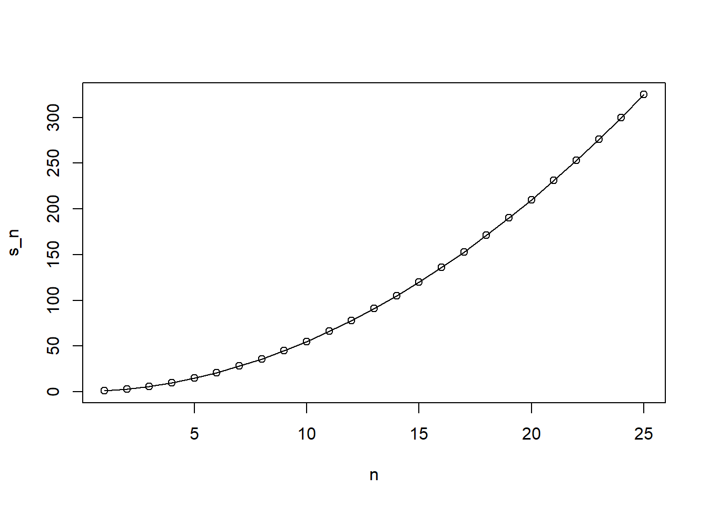
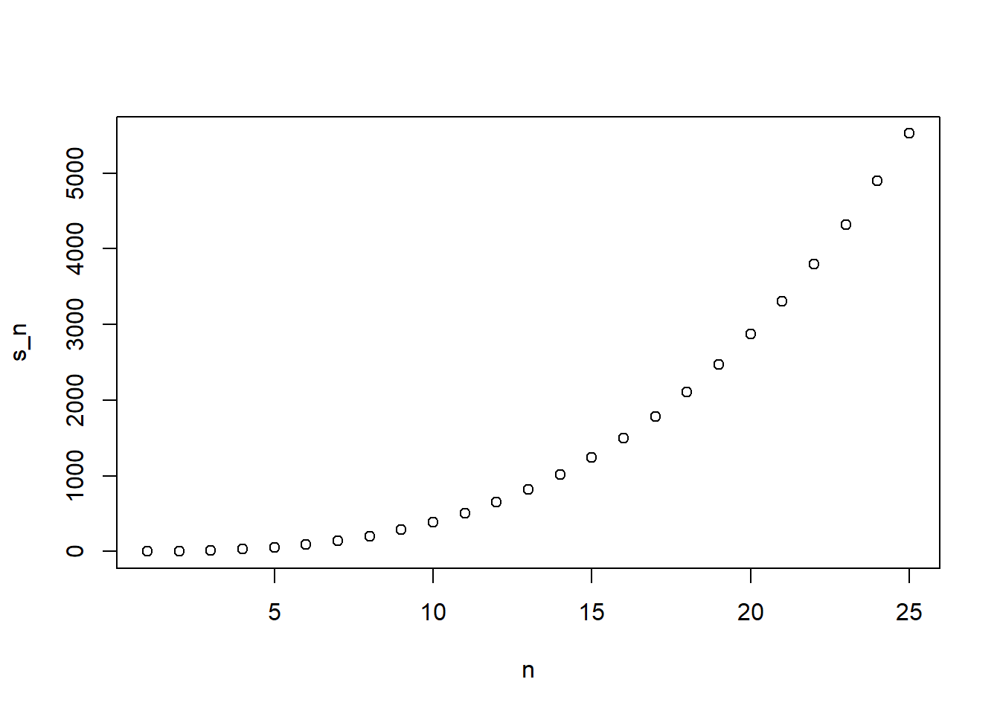

state abb region population
Length:51 Length:51 Northeast : 9 Min. : 563626
Class :character Class :character South :17 1st Qu.: 1696962
Mode :character Mode :character North Central:12 Median : 4339367
West :13 Mean : 6075769
3rd Qu.: 6636084
Max. :37253956
total
Min. : 2.0
1st Qu.: 24.5
Median : 97.0
Mean : 184.4
3rd Qu.: 268.0
Max. :1257.0
Код
nrow(murders) # количество строк в DF
[1] 51
Код
head(murders, 8) # отображает первые 20 строк DF
state abb region population total
1 Alabama AL South 4779736 135
2 Alaska AK West 710231 19
3 Arizona AZ West 6392017 232
4 Arkansas AR South 2915918 93
5 California CA West 37253956 1257
6 Colorado CO West 5029196 65
7 Connecticut CT Northeast 3574097 97
8 Delaware DE South 897934 38
Код
table(murders$region) # количество уникальных значений в каждом уровне факторной переменной
Northeast South North Central West
9 17 12 13
2. Квадратное уравнение (через функцию)
Чтобы найти решения уравнения такого формата , используйте квадратное уравнение:
\(a * x^2 + b*x + c = 0\) . Для чего существуют эти два решения? Используйте квадратное уравнение.
Мы уже знаем, что можем использовать функцию levels() для определения уровней фактора. Для определения количества уровней коэффициента может использоваться другая функция, levels().
Код
levels(murders$region)
[1] "Northeast" "South" "North Central" "West"
Код
nlevels(murders$region)
[1] 4
Section 2: Vectors, Sorting
1. names()
Используем для присвоения чисовым значениям имен :
sort() : используется для сортировки вектора от наименьшего к наибольшему
order() : возвращает вектор индекса, необходимый для сортировки вектора. Это означает, что sort(x) и x[order(x)] дают тот же результат.
rank () : Позиция элемента от наименьшего к наибольшему значению
Код
data("murders")pop <- murders$populationord <-order(pop) # сохраняем отсортированные по возрастанию численности изначальные индексыord[1] # узнаем какой индекс меньший по численности (т.е штат с наименьшей численностью имеет индекс 51)
i <-which.min(murders$population) # Define the variable i to be the index of the smallest statestates <- murders$state # Define variable states to hold the statesstates[i] # Use the index you just defined to find the state with the smallest population
[1] "Wyoming"
Код
states <- murders$state # Define a variable states to be the state names ranks <-rank(murders$population) # Define a variable ranks to determine the population size ranks my_df <-data.frame(states, ranks) # Create a data frame my_df with the state name and its rankhead(my_df, 8)
Создайте переменные states и ranks для хранения названий штатов и рангов по численности населения соответственно.
Создайте объект, в котором хранятся индексы, необходимые для упорядочивания значений совокупности, используя команду order.
Создайте фрейм данных с обеими переменными в правильном порядке.
Используйте оператор скобок \[, чтобы изменить порядок каждого столбца во фрейме данных.
Столбцы фрейма данных должны располагаться в определенном порядке и иметь определенные названия.
Код
states <- murders$state # Определите переменную states как имена state из фрейма данных murdersranks <-rank(murders$population) # Определите переменный ранг для определения рангов численности населения ind <-order(murders$population) # Определите переменную ind для хранения индексов, необходимых для упорядочивания (order) populationmy_df <-data.frame(states[ind], ranks[ind]) # Создайте фрейм данных my_df с названием штата и его рангом, упорядоченный от наименее густонаселенного к наиболееhead(my_df, 8)
states.ind. ranks.ind.
1 Wyoming 1
2 District of Columbia 2
3 Vermont 3
4 North Dakota 4
5 Alaska 5
6 South Dakota 6
7 Delaware 7
8 Montana 8
Код
data("na_example")ind <-is.na(na_example)sum(ind)
[1] 145
4. Расчет числа Эйлера:
\(Euler = \pi^2/6\)
Код
x <-seq(1:100)euler <-sum(1/x^2)euler
[1] 1.634984
Section 3: Indexing, Data Wrangling, Plots
1. indexing Assesement
Какая строка кода успешно отфильтрует набор данных об убийствах, чтобы показать только Массачусетс? Примечание: Предположим, что все названия штатов в наборе данных написаны не с заглавной буквы. Какая строка кода успешно отфильтрует набор данных об убийствах, чтобы показать только Массачусетс? Примечание: Предположим, что все названия штатов в наборе данных написаны не с заглавной буквы.
Код
which(murders$state =='massachusetts')
integer(0)
Код
c('massachusetts') %in% murders$state
[1] FALSE
Объяснение
which(), match() и %in% - все это может быть использовано для подмножества данных. Однако в этом случае параметр match() использует заглавные буквы, которых нет в нашем наборе данных, а одна из функций which() использует = вместо ==, что неверно.
Приведенный выше код показывает нам штаты с населением менее миллиона человек.
Используйте результаты предыдущего упражнения, чтобы сообщить названия штатов с уровнем убийств ниже 1, используя квадратные скобки для извлечения названий штатов из набора данных.
Если вместо индекса нам нужен логический, который сообщает нам, находится ли каждый элемент первого вектора во втором, мы можем использовать функцию %in%.
Какие из приведенных ниже сокращений являются действительными: MA, ME, MI, MO, MU?
Определите вектор символов с аббревиатурами MA, ME, MI, MO, MU.
Используйте оператор %in% для создания логического вектора, который имеет значение TRUE, когда аббревиатура находится в $$abb.
Мы снова работаем с символами abbs <- c('MA', 'ME', 'MI', 'MO', 'MU').
В предыдущем упражнении мы вычислили индекс abbs%in%murders$abb.
Основываясь на этом и используя функцию which и !оператор, получите индекс записей аббревиатур, которые не являются аббревиатурами.
Покажите записи аббревиатур, которые на самом деле не являются аббревиатурами.
Код
# Используйте команду "which" и оператор "!", чтобы выяснить, какие индексные сокращения на самом деле не являются частью набора данных и сохраните в "ind".abbs <-c('MA', 'ME', 'MI', 'MO', 'MU')ind2 <-which(!abbs%in%murders$abb)abbs[ind2]
[1] "MU"
2. dplyr
Код
library(dplyr)
Attaching package: 'dplyr'
The following objects are masked from 'package:stats':
filter, lag
The following objects are masked from 'package:base':
intersect, setdiff, setequal, union
Код
library(dslabs)data(murders)
Вы можете добавлять столбцы, используя функцию dplyrmutate. Эта функция знает имена столбцов, и внутри функции вы можете вызывать их без кавычек. Подобный этому:
murders <- mutate(murders, population_in_millions = population / 10^6)
2.1 mutate ()
Обратите внимание, что мы можем написать population, а не murders$population. Функция mutate знает, что мы берем столбцы из murders.
Используйте функцию mutate, чтобы добавить столбец убийств с именем rate с показателем убийств на 100 000 человек.
Убедитесь, что вы переопределили убийства, как это сделано в примере кода выше.
Помните, что уровень убийств определяется как общее количество убийств, деленное на численность населения, умноженную на 100 000 человек.
state abb region population total rate
1 Alabama AL South 4779736 135 2.824424
2 Alaska AK West 710231 19 2.675186
3 Arizona AZ West 6392017 232 3.629527
4 Arkansas AR South 2915918 93 3.189390
5 California CA West 37253956 1257 3.374138
6 Colorado CO West 5029196 65 1.292453
Обратите внимание, что если rank(x) дает вам ранги x от самого низкого до самого высокого, то rank(-x) дает вам ранги от самого высокого до самого низкого.
Используйте функцию mutate, чтобы добавить столбец rank, содержащий ранг, от самого высокого до самого низкого уровня убийств.
state abb region population total rate rank
1 Alabama AL South 4779736 135 2.824424 23
2 Alaska AK West 710231 19 2.675186 27
3 Arizona AZ West 6392017 232 3.629527 10
4 Arkansas AR South 2915918 93 3.189390 17
5 California CA West 37253956 1257 3.374138 14
6 Colorado CO West 5029196 65 1.292453 38
2.2 select ()
С помощью dplyr мы можем использовать select для отображения только определенных столбцов. Например, с помощью этого кода мы бы показывали только штаты и численность населения:
head(select(murders, state, population))
Используйте select(), чтобы отобразить названия штатов и аббревиатуры в “Убийствах”. Просто покажите это, не определяйте новый объект.
Код
head(murders %>%select(state, abb))
state abb
1 Alabama AL
2 Alaska AK
3 Arizona AZ
4 Arkansas AR
5 California CA
6 Colorado CO
2.3 filter
Фильтр функции dplyr используется для выбора определенных строк фрейма данных для сохранения. В отличие от select, который предназначен для столбцов, filter предназначен для строк. Например, вы можете показать только строку New York следующим образом:
filter(murders, state == "New York")
Вы можете использовать другие логические векторы для фильтрации строк.
Используйте filter, чтобы показать топ-5 штатов с самым высоким уровнем убийств. После того, как мы добавим количество убийств и ранг, не меняйте набор данных об убийствах, просто покажите результат. Обратите внимание, что вы можете выполнять фильтрацию на основе столбца rank.
state abb region population total rate rank
1 Alabama AL South 4779736 135 2.824424 23
2 Alaska AK West 710231 19 2.675186 27
3 Arizona AZ West 6392017 232 3.629527 10
4 Arkansas AR South 2915918 93 3.189390 17
5 California CA West 37253956 1257 3.374138 14
6 Colorado CO West 5029196 65 1.292453 38
2.4 filter!=
Мы можем удалить строки с помощью оператора !=. Например, чтобы удалить Флориду, мы бы сделали это:
no_florida <- filter(murders, state != "Florida")
Создайте новый фрейм данных с именем no_south, который удаляет штаты из Южного региона.
Сколько штатов относится к этой категории? Теперь вы можете использовать эту функцию для этого.
Код
no_south <-filter(murders, region !="South")nrow(no_south)
[1] 34
2.5 filter%in%
filter(murders, state %in% c("New York", "Texas"))
Создайте новый фрейм данных под названием murders_nw, содержащий только штаты с северо-востока и Запада.
Предположим, вы хотите жить на северо-востоке или Западе и хотите, чтобы уровень убийств был меньше 1. Мы хотим увидеть данные по штатам, удовлетворяющим этим параметрам. Обратите внимание, что вы можете использовать логические операторы с фильтром:
filter(murders, population < 5000000 & region == "Northeast")
Добавьте столбец “Уровень убийств” и столбец “ранг”, как это было сделано ранее
Создайте таблицу, назовем ее my_states, которая удовлетворяет обоим условиям: она находится на северо-востоке или Западе, а уровень убийств меньше 1.
Используйте select, чтобы отобразить только название штата, скорость и ранг
murders <-mutate(murders, rate = total / population *100000, rank =rank(-rate))murders %>%filter(region %in%c("Northeast", "West") & rate <1) %>%select(state, rate, rank)
state rate rank
1 Hawaii 0.5145920 49
2 Idaho 0.7655102 46
3 Maine 0.8280881 44
4 New Hampshire 0.3798036 50
5 Oregon 0.9396843 42
6 Utah 0.7959810 45
7 Vermont 0.3196211 51
8 Wyoming 0.8871131 43
2.8 mutate, filter and select
Используйте одну строку кода для создания нового фрейма данных, называемого my_states, который содержит столбцы rate и rank (с рангом, упорядоченным от самого высокого к самому низкому), учитывает только штаты на северо-востоке или Западе, в которых уровень убийств ниже 1, и содержит только штат, уровень и ранг колонны. Строка должна содержать четыре компонента, разделенных тремя операторами %>%:
Исходный набор данных об убийствах
mutate, чтобы добавить rate и rank.
filter, чтобы сохранить только штаты с северо-востока или Запада, в которых уровень убийств ниже 1.
Вызов select, в котором сохраняются только столбцы с названием штата, уровнем убийств и рангом.
state rate rank
1 Hawaii 0.5145920 49
2 Idaho 0.7655102 46
3 Maine 0.8280881 44
4 New Hampshire 0.3798036 50
5 Oregon 0.9396843 42
6 Utah 0.7959810 45
7 Vermont 0.3196211 51
8 Wyoming 0.8871131 43
Practice Exercise. National Center for Health Statistics
Чтобы попрактиковаться в наших навыках dplyr, мы будем работать с данными опроса, собранного Национальным центром статистики здравоохранения США (NCHS). Этот центр проводит серию обследований состояния здоровья и питания с 1960-х годов.
Начиная с 1999 года, ежегодно опрашивается около 5000 человек всех возрастов, а затем они проходят медицинский осмотр в рамках обследования. Часть этого набора данных доступна через пакет NHANES, который может быть загружен таким образом:
Код
library(NHANES)data(NHANES)
Данные NHANES содержат много пропущенных значений. Помните, что основная функция суммирования в R вернет значение NA, если какой-либо из элементов входного вектора равен NA. Вот пример:
Код
library(dslabs)data(na_example)mean(na_example)
[1] NA
Код
sd(na_example)
[1] NA
игнорируйте NA, мы можем использовать аргумент na.rm:
Давайте изучим данные NHANES. Мы будем изучать артериальное давление в этом наборе данных.
Сначала давайте выберем группу для установки стандарта. Мы будем использовать женщин в возрасте 20-29 лет. Обратите внимание, что категория обозначена цифрами 20-29, с пробелом перед цифрой 20! AgeDecade является категориальной переменной для этих возрастов.
Чтобы узнать, является ли кто-то женщиной, вы можете посмотреть на переменную Gender.
Отфильтруйте набор данных NHANES таким образом, чтобы в него были включены только женщины в возрасте 20-29 лет, и назначьте этот новый фрейм данных вкладке tab.
Используйте канал, чтобы применить функциональный фильтр с соответствующей логикой к NHANES. Помните, что эта возрастная группа обозначается цифрой 20-29, которая включает пробел.
Вы можете использовать head для изучения таблицы NHANES, чтобы построить правильный вызов filter.
# A tibble: 6 × 76
ID SurveyYr Gender Age AgeDecade AgeMonths Race1 Race3 Education
<int> <fct> <fct> <int> <fct> <int> <fct> <fct> <fct>
1 51624 2009_10 male 34 " 30-39" 409 White <NA> High School
2 51624 2009_10 male 34 " 30-39" 409 White <NA> High School
3 51624 2009_10 male 34 " 30-39" 409 White <NA> High School
4 51625 2009_10 male 4 " 0-9" 49 Other <NA> <NA>
5 51630 2009_10 female 49 " 40-49" 596 White <NA> Some College
6 51638 2009_10 male 9 " 0-9" 115 White <NA> <NA>
# ℹ 67 more variables: MaritalStatus <fct>, HHIncome <fct>, HHIncomeMid <int>,
# Poverty <dbl>, HomeRooms <int>, HomeOwn <fct>, Work <fct>, Weight <dbl>,
# Length <dbl>, HeadCirc <dbl>, Height <dbl>, BMI <dbl>,
# BMICatUnder20yrs <fct>, BMI_WHO <fct>, Pulse <int>, BPSysAve <int>,
# BPDiaAve <int>, BPSys1 <int>, BPDia1 <int>, BPSys2 <int>, BPDia2 <int>,
# BPSys3 <int>, BPDia3 <int>, Testosterone <dbl>, DirectChol <dbl>,
# TotChol <dbl>, UrineVol1 <int>, UrineFlow1 <dbl>, UrineVol2 <int>, …
Код
tab <- NHANES %>%filter(Gender =="female"& Age >=20& Age <=29)tab
# A tibble: 681 × 76
ID SurveyYr Gender Age AgeDecade AgeMonths Race1 Race3 Education
<int> <fct> <fct> <int> <fct> <int> <fct> <fct> <fct>
1 51710 2009_10 female 26 " 20-29" 319 White <NA> College Grad
2 51731 2009_10 female 28 " 20-29" 346 Black <NA> High School
3 51741 2009_10 female 21 " 20-29" 253 Black <NA> Some College
4 51741 2009_10 female 21 " 20-29" 253 Black <NA> Some College
5 51760 2009_10 female 27 " 20-29" 334 Hispanic <NA> 9 - 11th Grade
6 51764 2009_10 female 29 " 20-29" 357 White <NA> College Grad
7 51764 2009_10 female 29 " 20-29" 357 White <NA> College Grad
8 51764 2009_10 female 29 " 20-29" 357 White <NA> College Grad
9 51774 2009_10 female 26 " 20-29" 312 White <NA> 8th Grade
10 51774 2009_10 female 26 " 20-29" 312 White <NA> 8th Grade
# ℹ 671 more rows
# ℹ 67 more variables: MaritalStatus <fct>, HHIncome <fct>, HHIncomeMid <int>,
# Poverty <dbl>, HomeRooms <int>, HomeOwn <fct>, Work <fct>, Weight <dbl>,
# Length <dbl>, HeadCirc <dbl>, Height <dbl>, BMI <dbl>,
# BMICatUnder20yrs <fct>, BMI_WHO <fct>, Pulse <int>, BPSysAve <int>,
# BPDiaAve <int>, BPSys1 <int>, BPDia1 <int>, BPSys2 <int>, BPDia2 <int>,
# BPSys3 <int>, BPDia3 <int>, Testosterone <dbl>, DirectChol <dbl>, …
Exercise 2. Blood pressure 2
Теперь мы вычислим среднее значение и стандартное отклонение для подгруппы, которую мы определили в предыдущем упражнении (женщины в возрасте 20-29 лет), которые мы будем использовать в качестве эталонных для того, что является типичным.
Вы определите среднее значение и стандартное отклонение систолического артериального давления, которые хранятся в переменной BPSysAve в наборе данных NHANES.
Заполните строку кода, чтобы сохранить среднее и стандартное отклонение систолического артериального давления как average, а standard_deviation - в переменной с именем ref.
Используйте функцию summarize после фильтрации для женщин в возрасте 20-29 лет и соедините результаты, используя канал %>%. При выполнении этого помните, что в данных есть NA!
Теперь мы повторим упражнение и рассчитаем только среднее кровяное давление для женщин в возрасте 20-29 лет. Для этого упражнения вам следует ознакомиться с тем, как использовать заполнитель . в dplyr или функции pull.
Измените строку примера кода, чтобы присвоить среднее значение числовой переменной с именемref_avg, используя . илиpull.
Функция pull() из пакета dplyr используется для извлечения одного столбца из датафрейма (или tibble) как вектор. Это может быть полезно, когда после ряда операций dplyr вы хотите работать с одним столбцом.
Exercise 4. Min and max
Давайте продолжим практиковаться, рассчитав две другие сводки данных: минимальную и максимальную.
Снова мы сделаем это для переменной BPSysAve и группы женщин в возрасте 20-29 лет.
Укажите минимальное и максимальное значения для той же группы, что и в предыдущих упражнениях.
Используйте filter и summarize , подключенные по трубе %>%. Функции min и max можно использовать для получения нужных значений.
В summarize сохраните минимальное и максимальное значения систолического артериального давления как minbp и maxbp.
Теперь давайте попрактикуемся в использовании функции group_by.
То, что мы собираемся сделать, - это очень распространенная операция в науке о данных: вы разделите таблицу данных на группы, а затем вычислите сводную статистику для каждой группы.
Мы рассчитаем среднее и стандартное отклонение систолического артериального давления у женщин для каждой возрастной группы отдельно. Помните, что возрастные группы указаны в возрастной декаде AgeDecade.
Используйте функции filter, group_by, summaryize и pipe %>%, чтобы вычислить среднее и стандартное отклонение систолического артериального давления у женщин для каждой возрастной группы отдельно.
В summarize сохраните среднее и стандартное отклонение систолического артериального давления BPSysAve как average и standart_deviation.
Примечание: игнорируйте предупреждения о не явном NA. Это предупреждение не помешает правильному запуску вашего кода.
Теперь давайте еще немного попрактикуемся в использовании group_by. Мы собираемся повторить предыдущее упражнение по вычислению среднего и стандартного отклонения систолического артериального давления, но для мужчин, а не для женщин.
На самом деле мы можем объединить оба этих резюме в одну строку кода. Это связано с тем, что group_by позволяет нам группировать более чем по одной переменной.
Мы можем использовать group_by(AgeDecade, Gender) для группировки как по возрастным декадам, так и по полу.
Создайте единую сводную таблицу для среднего и стандартного отклонения систолического артериального давления, используя group_by(AgeDecade, Gender).
Обратите внимание, что нам больше не нужно фильтровать!
Ваш код в summarize должен оставаться таким же, как и в предыдущих упражнениях.
Примечание: игнорируйте предупреждения о неявном NA. Это предупреждение не помешает правильному запуску вашего кода или его оценке.
Теперь мы собираемся изучить различия в систолическом артериальном давлении между расами, как указано в переменной Race 1.
Мы научимся использовать функцию упорядочивания arrange, чтобы упорядочить результат в соответствии с одной переменной.
Обратите внимание, что эту функцию можно использовать для упорядочивания любой таблицы по заданному результату. Вот пример, который упорядочивается по систолическому артериальному давлению.
NHANES %>% arrange(BPSysAve)
Если мы хотим, чтобы это было в порядке убывания, мы можем использовать функцию desc следующим образом:
NHANES %>% arrange(desc(BPSysAve))
В этом примере мы сравним систолическое артериальное давление по значениям переменной Race 1для мужчин в возрасте 40-49 лет.
Вычислите среднее значение и стандартное отклонение для каждого значения Race 1 для мужчин в возрасте 40-49 лет.
Упорядочьте полученную таблицу от самого низкого к самому высокому среднему систолическому артериальному давлению.
Используйте функции filter, group_by, summarize, arrange и pipe %>%, чтобы сделать это в одной строке кода. В summarize сохраните среднее и стандартное отклонение систолического артериального давления как average и standart_deviation.
Код
NHANES %>%filter(Gender =="male"& Age >=40& Age <=49) %>%group_by(Race1) %>%summarize(average =mean(BPSysAve, na.rm =TRUE),standard_deviation =sd(BPSysAve, na.rm =TRUE) ) %>%arrange(average)
# A tibble: 5 × 3
Race1 average standard_deviation
<fct> <dbl> <dbl>
1 White 120. 13.4
2 Other 120. 16.2
3 Hispanic 122. 11.1
4 Mexican 122. 13.9
5 Black 126. 17.1
3. data.table
3.1 Introduction to data.table (theory)
Ключевые моменты
В этом курсе мы часто используем пакеты tidyverse для иллюстрации, потому что эти пакеты, как правило, содержат код, который очень удобочитаем для начинающих.
Существуют и другие подходы к обработке и анализу данных в R, которые быстрее и лучше справляются с большими объектами, такими как пакет data.table.
При выборе в data.table используется обозначение, аналогичное тому, которое используется с матрицами.
Чтобы добавить столбец в data.table, вы можете использовать функцию :=.
Поскольку пакет data.table разработан таким образом, чтобы избежать пустой траты памяти, когда вы создаете копию таблицы, он не создает новый объект. Функция := изменяется по ссылке.
Если вы хотите сделать фактическую копию, вам нужно использовать функцию copy().
Примечание: начиная с версии 4.1, в языке R появился новый встроенный оператор pipe: |>. Это работает аналогично каналу %>%, с которым вы уже знакомы.
Код
# load data.table packagelibrary(data.table)
Attaching package: 'data.table'
The following objects are masked from 'package:dplyr':
between, first, last
Код
# load other packages and datasetslibrary(tidyverse)
library(dplyr)library(dslabs)data(murders)# convert the data frame into a data.table objectmurders <-setDT(murders)# selecting in dplyrhead(select(murders, state, region))
state region
1: Alabama South
2: Alaska West
3: Arizona West
4: Arkansas South
5: California West
6: Colorado West
Код
# selecting in data.table - 2 methodsmurders[, c("state", "region")] |>head()
state region
1: Alabama South
2: Alaska West
3: Arizona West
4: Arkansas South
5: California West
6: Colorado West
Код
murders[, .(state, region)] |>head()
state region
1: Alabama South
2: Alaska West
3: Arizona West
4: Arkansas South
5: California West
6: Colorado West
Код
# adding or changing a column in dplyrmurders <-mutate(murders, rate = total / population *10^5)# adding or changing a column in data.tablemurders[, rate := total / population *100000]head(murders)
state abb region population total rate
1: Alabama AL South 4779736 135 2.824424
2: Alaska AK West 710231 19 2.675186
3: Arizona AZ West 6392017 232 3.629527
4: Arkansas AR South 2915918 93 3.189390
5: California CA West 37253956 1257 3.374138
6: Colorado CO West 5029196 65 1.292453
Код
murders[, ":="(rate = total / population *100000, rank =rank(population))]
Warning in `[.data.table`(murders, , `:=`(rate = total/population * 1e+05, :
Invalid .internal.selfref detected and fixed by taking a (shallow) copy of the
data.table so that := can add this new column by reference. At an earlier
point, this data.table has been copied by R (or was created manually using
structure() or similar). Avoid names<- and attr<- which in R currently (and
oddly) may copy the whole data.table. Use set* syntax instead to avoid copying:
?set, ?setnames and ?setattr. If this message doesn't help, please report your
use case to the data.table issue tracker so the root cause can be fixed or this
message improved.
Код
# y is referring to x and := changes by referencex <-data.table(a =1)y <- xx[,a :=2]y
a
1: 2
Код
y[,a :=1]x
a
1: 1
Код
# use copy to make an actual copyx <-data.table(a =1)y <-copy(x)x[,a :=2]y
a
1: 1
3.2 Summarizing with data.table
Ключевые моменты
В data.table мы можем вызывать функции внутри .(), и они будут применены к строкам.
group_by, за которым следует summarize в dplyr, выполняется в одной строке в data.table с использованием аргумента by.
Код
# load packages and prepare the data - heights datasetlibrary(tidyverse)library(dplyr)library(dslabs)data(heights)heights <-setDT(heights)# summarizing in dplyrs <- heights %>%summarize(average =mean(height), standard_deviation =sd(height))# summarizing in data.tables <- heights[, .(average =mean(height), standard_deviation =sd(height))]# subsetting and then summarizing in dplyrs <- heights %>%filter(sex =="Female") %>%summarize(average =mean(height), standard_deviation =sd(height))# subsetting and then summarizing in data.tables <- heights[sex =="Female", .(average =mean(height), standard_deviation =sd(height))]# previously defined functionmedian_min_max <-function(x){ qs <-quantile(x, c(0.5, 0, 1))data.frame(median = qs[1], minimum = qs[2], maximum = qs[3])}# multiple summaries in data.tableheights[, .(median_min_max(height))]
median minimum maximum
1: 68.5 50 82.67717
Код
# grouping then summarizing in data.tableheights[, .(average =mean(height), standard_deviation =sd(height)), by = sex]
sex average standard_deviation
1: Male 69.31475 3.611024
2: Female 64.93942 3.760656
3.3 Sorting data frames
Ключевые моменты
Чтобы упорядочить строки во фрейме данных с помощью data.table, мы можем использовать тот же подход, который мы использовали для фильтрации.
Сортировка по умолчанию осуществляется в порядке возрастания, но мы также можем сортировать таблицы в порядке убывания.
Мы также можем выполнить вложенную сортировку, включив несколько переменных в желаемом порядке сортировки.
Код
# load packages and datasets and prepare the datalibrary(tidyverse)library(dplyr)library(data.table)library(dslabs)data(murders)murders <-setDT(murders)murders[, rate := total / population *100000]# order by populationmurders[order(population)] |>head()
state abb region population total rate
1: Wyoming WY West 563626 5 0.8871131
2: District of Columbia DC South 601723 99 16.4527532
3: Vermont VT Northeast 625741 2 0.3196211
4: North Dakota ND North Central 672591 4 0.5947151
5: Alaska AK West 710231 19 2.6751860
6: South Dakota SD North Central 814180 8 0.9825837
Код
# order by population in descending orderhead(murders[order(population, decreasing =TRUE)] )
state abb region population total rate
1: California CA West 37253956 1257 3.374138
2: Texas TX South 25145561 805 3.201360
3: Florida FL South 19687653 669 3.398069
4: New York NY Northeast 19378102 517 2.667960
5: Illinois IL North Central 12830632 364 2.836961
6: Pennsylvania PA Northeast 12702379 457 3.597751
Код
# order by region and then murder ratehead(murders[order(region, rate)])
state abb region population total rate
1: Vermont VT Northeast 625741 2 0.3196211
2: New Hampshire NH Northeast 1316470 5 0.3798036
3: Maine ME Northeast 1328361 11 0.8280881
4: Rhode Island RI Northeast 1052567 16 1.5200933
5: Massachusetts MA Northeast 6547629 118 1.8021791
6: New York NY Northeast 19378102 517 2.6679599
3.4 Tibbles
Ключевые моменты
tbl (произносится как “тиббл”) - это особый вид фрейма данных.
Tibbles - это фрейм данных по умолчанию в tidyverse.
Tibbles отображаются лучше, чем обычные фреймы данных.
Subset Tibbles - это Tibbles, что полезно, поскольку функции tidyverse требуют фреймов данных в качестве входных данных.
Tibbles предупредит вас, если вы попытаетесь получить доступ к несуществующему столбцу. Записи в tibbles могут быть сложными - это могут быть списки или функции. Функция group_by() возвращает сгруппированный tibble, который является особым видом tibble.
Код
# view the datasetmurders %>%group_by(region)
# A tibble: 51 × 6
# Groups: region [4]
state abb region population total rate
<chr> <chr> <fct> <dbl> <dbl> <dbl>
1 Alabama AL South 4779736 135 2.82
2 Alaska AK West 710231 19 2.68
3 Arizona AZ West 6392017 232 3.63
4 Arkansas AR South 2915918 93 3.19
5 California CA West 37253956 1257 3.37
6 Colorado CO West 5029196 65 1.29
7 Connecticut CT Northeast 3574097 97 2.71
8 Delaware DE South 897934 38 4.23
9 District of Columbia DC South 601723 99 16.5
10 Florida FL South 19687653 669 3.40
# ℹ 41 more rows
Код
# see the classmurders %>%group_by(region) %>%class()
[1] "grouped_df" "tbl_df" "tbl" "data.frame"
Код
# compare the print output of a regular data frame to a tibblehead(gapminder)
country year infant_mortality life_expectancy fertility
1 Albania 1960 115.40 62.87 6.19
2 Algeria 1960 148.20 47.50 7.65
3 Angola 1960 208.00 35.98 7.32
4 Antigua and Barbuda 1960 NA 62.97 4.43
5 Argentina 1960 59.87 65.39 3.11
6 Armenia 1960 NA 66.86 4.55
population gdp continent region
1 1636054 NA Europe Southern Europe
2 11124892 13828152297 Africa Northern Africa
3 5270844 NA Africa Middle Africa
4 54681 NA Americas Caribbean
5 20619075 108322326649 Americas South America
6 1867396 NA Asia Western Asia
Код
as_tibble(gapminder)
# A tibble: 10,545 × 9
country year infant_mortality life_expectancy fertility population gdp
<fct> <int> <dbl> <dbl> <dbl> <dbl> <dbl>
1 Albania 1960 115. 62.9 6.19 1636054 NA
2 Algeria 1960 148. 47.5 7.65 11124892 1.38e10
3 Angola 1960 208 36.0 7.32 5270844 NA
4 Antigua… 1960 NA 63.0 4.43 54681 NA
5 Argenti… 1960 59.9 65.4 3.11 20619075 1.08e11
6 Armenia 1960 NA 66.9 4.55 1867396 NA
7 Aruba 1960 NA 65.7 4.82 54208 NA
8 Austral… 1960 20.3 70.9 3.45 10292328 9.67e10
9 Austria 1960 37.3 68.8 2.7 7065525 5.24e10
10 Azerbai… 1960 NA 61.3 5.57 3897889 NA
# ℹ 10,535 more rows
# ℹ 2 more variables: continent <fct>, region <fct>
Код
# compare subsetting a regular data frame and a tibbleclass(murders[,1])
[1] "data.table" "data.frame"
Код
class(as_tibble(murders)[,1])
[1] "tbl_df" "tbl" "data.frame"
Код
# access a column vector not as a tibble using $class(as_tibble(murders)$state)
[1] "character"
Код
# compare what happens when accessing a column that doesn't exist in a regular data frame to in a tibblemurders$State
NULL
Код
as_tibble(murders)$State
Warning: Unknown or uninitialised column: `State`.
subset столбца sex набора данных по индексу в 4b для определения пола индивида.
Код
heights$sex[ind_min]
[1] Male
Levels: Female Male
Question 5
Этот вопрос проведет вас через три шага, чтобы определить, сколько из целочисленных значений высоты между минимальной и максимальной высотами не являются фактическими высотами отдельных лиц в наборе данных heights.
Determine the maximum height
Код
max <-max(heights$height)ind_max <-match(max(heights$height), heights$height)max
[1] 82.7
Код
ind_max
[1] 1017
Using the heights dataset, create a new column of heights in centimeters named ht_cm. Recall that 1 inch = 2.54 centimeters. Save the resulting dataset as heights2.
What is the height in centimeters of the 18th individual (index 18)?
Набор данных об оливках olive в dslabs содержит процентный состав восьми жирных кислот, содержащихся в липидной фракции 572 итальянских оливковых масел:
Plot the percent palmitic acid versus palmitoleic acid in a scatterplot. What relationship do you see?
Create a histogram of the percentage of eicosenoic acid in olive. Which of the following is true?
Make a boxplot of palmitic acid percentage in olive with separate distributions for each region. Which region has the highest median palmitic acid percentage?
Раздел 4 знакомит вас с общими функциями программирования, такими как команды if-else и for loop, чтобы вы могли писать свои собственные функции для выполнения различных операций с наборами данных.
В разделе 4.1 вы узнаете:
Разобраться в некоторых возможностях программирования R.
В разделе 4.2 вы узнаете:
Используйте базовые условные выражения для выполнения различных операций.
Проверьте, являются ли какие-либо или все элементы логического вектора истинными.
В разделе 4.3 вы узнаете:
Определяйте и вызывайте функции для выполнения различных операций.
Передавайте аргументы функциям и возвращайте переменные/объекты из функций.
В разделе 4.4 вы узнаете:
Используйте for-циклы для выполнения повторяющихся операций. Сформулируйте встроенные функции R, которые вы могли бы попробовать сами. Существует одна оценка DataCamp и одна итоговая оценка, чтобы вы могли попрактиковаться в своих навыках программирования.
1. Basic Conditionals
Ключевые моменты
Наиболее распространенным условным выражением в программировании является оператор if-else, который имеет вид if [условие], выполните [выражение], else выполните [альтернативное выражение]“.
Функция ifelse() работает аналогично оператору if-else, но она особенно полезна, поскольку работает с векторами, исследуя каждый элемент вектора и возвращая соответствующий ответ соответствующим образом. Функция any() принимает вектор логических значений и возвращает true, если какая-либо из записей истинна. Функция all() принимает вектор логических значений и возвращает значение true, если все записи являются истинными.
Код
# an example showing the general structure of an if-else statementa <-0if(a!=0){print(1/a)} else{print("No reciprocal for 0.")}
[1] "No reciprocal for 0."
Код
# an example that tells us which states, if any, have a murder rate less than 0.5library(dslabs)data(murders)murder_rate <- murders$total / murders$population*100000ind <-which.min(murder_rate)if(murder_rate[ind] <0.5){print(murders$state[ind]) } else{print("No state has murder rate that low")}
[1] "Vermont"
Код
# changing the condition to < 0.25 changes the resultif(murder_rate[ind] <0.25){print(murders$state[ind]) } else{print("No state has a murder rate that low.")}
[1] "No state has a murder rate that low."
Код
# the ifelse() function works similarly to an if-else conditionala <-0ifelse(a >0, 1/a, NA)
[1] NA
Код
# the ifelse() function is particularly useful on vectorsa <-c(0,1,2,-4,5)result <-ifelse(a >0, 1/a, NA)# the ifelse() function is also helpful for replacing missing valuesdata(na_example)no_nas <-ifelse(is.na(na_example), 0, na_example) sum(is.na(no_nas))
[1] 0
Код
# the any() and all() functions evaluate logical vectorsz <-c(TRUE, TRUE, FALSE)any(z)
[1] TRUE
Код
all(z)
[1] FALSE
2. Functions
Ключевые моменты
Функция R, называемая function(), сообщает R, что вы собираетесь определить новую функцию.
Функции являются объектами, поэтому им должно быть присвоено имя переменной с помощью оператора arrow.
Общий способ определения функций таков: (1) определите имя функции, которое будет объектом, (2) введите function() с аргументами вашей функции в круглых скобках, (3) запишите все операции внутри квадратных скобок. Переменные, определенные внутри функции, не сохраняются в рабочей области.
Код
# example of defining a function to compute the average of a vector xavg <-function(x){ s <-sum(x) n <-length(x) s/n}# we see that the above function and the pre-built R mean() function are identicalx <-1:100identical(mean(x), avg(x))
[1] TRUE
Код
# variables inside a function are not defined in the workspaces <-3avg(1:10)
[1] 5.5
Код
s
[1] 3
Код
# functions can have multiple arguments as well as default valuesavg <-function(x, arithmetic =TRUE){ n <-length(x)ifelse(arithmetic, sum(x)/n, prod(x)^(1/n))}
3. For Loops
Ключевые моменты
Циклы For выполняют одну и ту же задачу снова и снова при изменении переменной. Они позволяют нам определить диапазон, который принимает наша переменная, а затем изменять значение в каждом цикле и вычислять выражение каждый раз внутри цикла.
Общая форма цикла for такова: “Для i в [некотором диапазоне] выполните операции”. Это значение i изменяется во всем диапазоне значений, и операции предполагают, что i - это значение, которое вы хотите вычислить.
В конце цикла значение i является последним значением диапазона.
Код
# создаем функцию, которая вычисляет сумму целых чисел от 1 до ncompute_s_n <-function(n){ x <-1:nsum(x)}# a very simple for-loopfor(i in1:5){print(i)}
[1] 1
[1] 2
[1] 3
[1] 4
[1] 5
Код
# a for-loop for our summationm <-25s_n <-vector(length = m) # создайте пустой векторfor(n in1:m){ s_n[n] <-compute_s_n(n)}# создаем график для нашей функции суммированияn <-1:mplot(n, s_n)# таблица значений, сравнивающих нашу функцию с формулой суммированияhead(data.frame(s_n = s_n, formula = n*(n+1)/2))
# overlaying our function with the summation formulaplot(n, s_n)lines(n, n*(n+1)/2)

DataCamp Assessment 4.0 Programming Basics
Функция nchar сообщает вам, сколько символов имеет длина символьного вектора. Например:
Код
char_len <-nchar(murders$state)head(char_len, 15)
[1] 7 6 7 8 10 8 11 8 20 7 7 6 5 8 7
Функция ifelse полезна, потому что вы преобразуете вектор логических элементов во что-то другое. Например, в некоторых наборах данных используется число -999для обозначения NA. Плохая практика! Вы можете преобразовать значение -999 в векторе в NA, используя следующий вызов if else:
Используйте функцию ifelse для написания одной строки кода, которая присваивает объекту new_names аббревиатуру штата, когда название штата длиннее 8 символов, и присваивает название штата, когда имя не длиннее 8 символов.
Например, если в исходном векторе есть Массачусетс (13 символов), то в новом векторе должно быть MA. Но там, где в исходном векторе есть Нью-Йорк (8 символов), в новом векторе также должен быть Нью-Йорк.
Вы столкнетесь с ситуациями, в которых нужная вам функция еще не существует. R позволяет вам писать свои собственные. Давайте попрактикуемся в одной такой ситуации, в которой вам сначала нужно определить используемую функцию. Определяемые вами функции могут иметь несколько аргументов, а также значения по умолчанию.
Для определения функций мы используем function. Например, следующая функция добавляет 1 к числу, которое она получает в качестве аргумента:
Код
my_func <-function(x){ y <- x +1 y}
Возвращается последнее значение в функции, в данном случае сохраненное в y.
Если вы запустите приведенный выше код, R ничего не покажет. Это означает, что вы определили функцию. Вы можете протестировать это следующим образом:
Код
my_func(5)
[1] 6
Мы определим функцию sum_n для этого упражнения.
Создайте функцию sum_n, которая для любого заданного значения, скажем, n,
создает вектор 1:n, а затем вычисляет сумму целых чисел от 1 до n. Используйте функцию, которую вы только что определили, чтобы определить сумму целых чисел от 1 до 5000.
Код
sum_n <-function(n){ x <-1:nsum(x)}n <-10sum_n(n)
[1] 55
3. Defining functions continued...
Мы создадим еще одну функцию для этого упражнения. Мы определим функцию altman_plot, которая принимает два аргумента x и y и строит график разности y-x по оси y относительно суммы x+y по оси x.
Вы можете определять функции с таким количеством переменных, сколько захотите. Например, здесь нам нужны как минимум два, x и y. Следующая функция отображает преобразованные значения в plot:
Лексическое определение области видимости - это соглашение, используемое многими языками, которое определяет, когда объект доступен по его имени. Когда вы запустите приведенный ниже код, вы увидите, какой x доступен в разных точках кода.
Код
x <-8my_func <-function(y){ x <-9print(x) y + x}my_func(x)
[1] 9
[1] 17
Код
print(x)
[1] 8
Обратите внимание, что когда мы определяем x как 9, это происходит внутри функции, но после запуска функции оно равно 8. Символ x изменился внутри функции, но не снаружи.
После выполнения приведенного ниже кода, каково значение x?
Код
x <-3my_func <-function(y){ x <-5 yprint(x)}my_func(x)
[1] 5
5. For loops
В следующем упражнении мы собираемся написать цикл for. В этом цикле for мы собираемся вызвать функцию. Мы определяем эту функцию здесь.
Напишите функцию compute_s_n, которая для любого заданного значения n вычисляет сумму sumn = 12 + 2^2 + ….
Сообщите значение суммы, когда n=10.
Код
compute_s_n <-function(n){ Sn <-1:n sumn <-sum(Sn^2) sumn}n <-10compute_s_n(n)
[1] 385
6. For loops continued...
Теперь мы собираемся вычислить сумму квадратов для нескольких значений . Для этого мы будем использовать цикл for. Вот пример цикла for:
Код
results <-vector("numeric", 10)n <-10for(i in1:n){ x <-1:i results[i] <-sum(x)}
Обратите внимание, что мы начинаем с вызова vector, который создает пустой вектор, который мы будем заполнять во время выполнения цикла.
Вычислите сумму, когда n равно каждому целому числу от 1 до 25, используя функцию, которую мы определили в предыдущем упражнении: compute_s_nСохраните результаты в s_n
Код
results <-vector("numeric", 25)n =25compute_s_n <-function(n){ x <-1:nsum(x^2)}for (i in1:n){ s_n[i] <-compute_s_n(i) s_n}compute_s_n(25)
[1] 5525
7. Checking our math
Если мы произведем математические расчеты, то сможем показать, что
Sn = 12 + 22 + ….n^2 = n(n+1)(2n+1)/6
Мы уже вычислили значения от 1 до 25, используя цикл for.
Если формула верна, то график versus должен выглядеть кубическим.
Давайте составим этот сюжет.
Определите n <- 1:25. Обратите внимание, что при этом мы можем использовать for(i in n)
Используйте цикл for для сохранения сумм в вектор s_n <- vector("numeric", 25).
Постройте график s_n (по оси y) против n (по оси x).
Код
results <-vector("numeric", 25)n =1:25compute_s_n <-function(n){ x <-1:nsum(x^2)}for (i in1:n){ s_n[i] <-compute_s_n(i) s_n}
Warning in 1:n: numerical expression has 25 elements: only the first used
Код
compute_s_n(25)
[1] 5525
Код
plot(n, s_n)

Теперь давайте на самом деле проверим, получим ли мы точно такой же ответ.
Код
identical(s_n, n*(n+1)*(2*n+1)/6)
[1] TRUE
Section 4 Assessment
Question 1
Load theheightsdataset from dslabs:
Напишите оператор ifelse(), который возвращает 1, если пол женский, и 2, если пол мужской.
Учитывая целое число x, факториал от x называется x! и является произведением всех целых чисел до x включительно. Функция factorial() вычисляет факториалы в R. Например, функция factorial(4) возвращает 4! = 4 × 3 × 2 × 1 = 24.
Выполните приведенный выше код, чтобы сгенерировать вектор длины m, где первая запись равна 1!, вторая запись равна 2! и так далее до m!.
Код
# define a vector of length mm <-10f_n <-vector(length = m)# make a vector of factorials{f_n[n] <-factorial(n)}# inspect f_nf_n